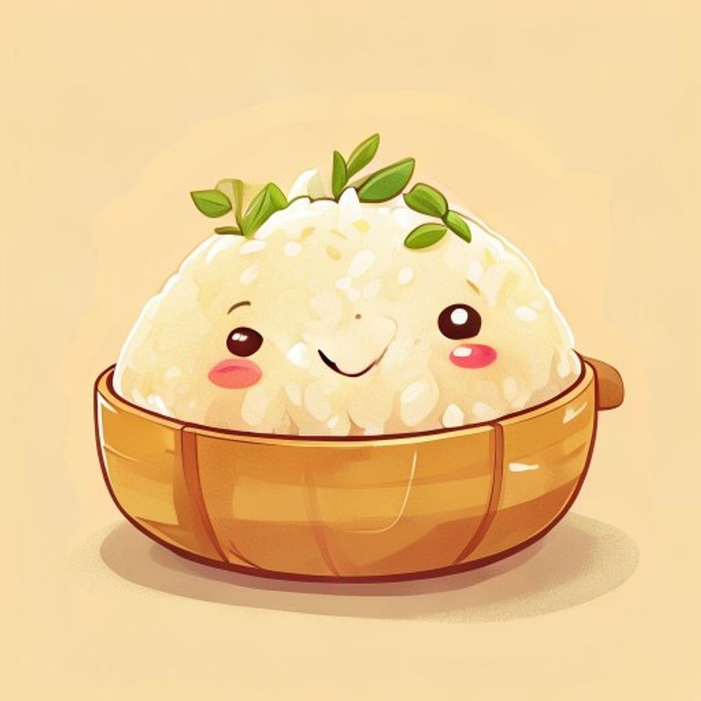
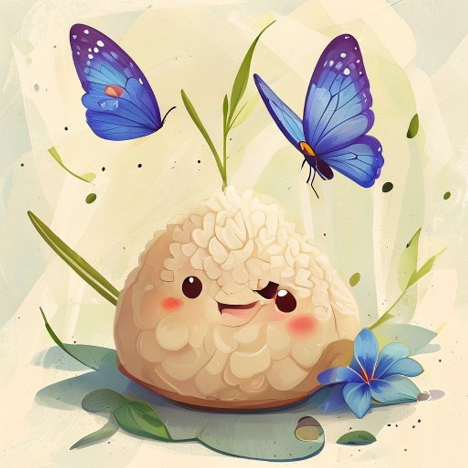
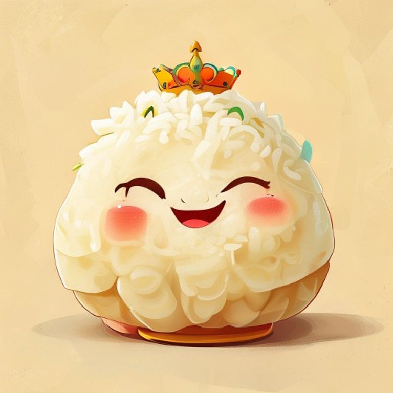
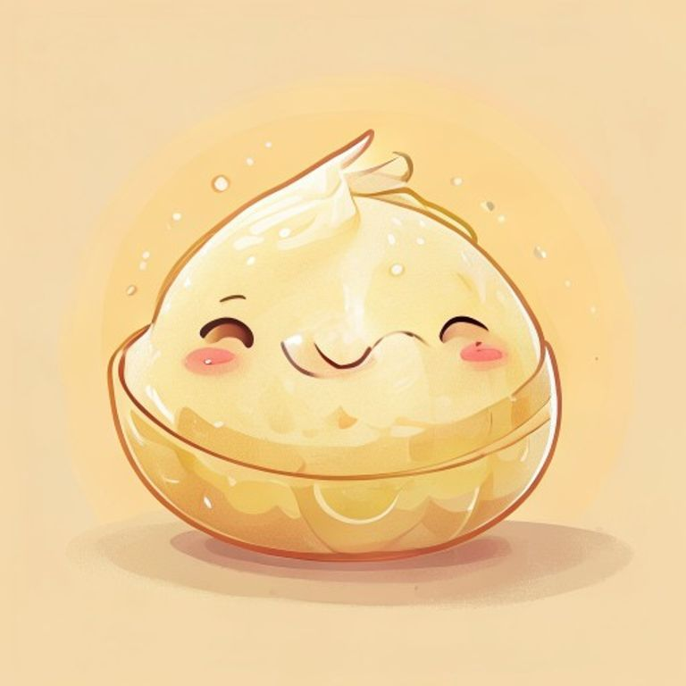
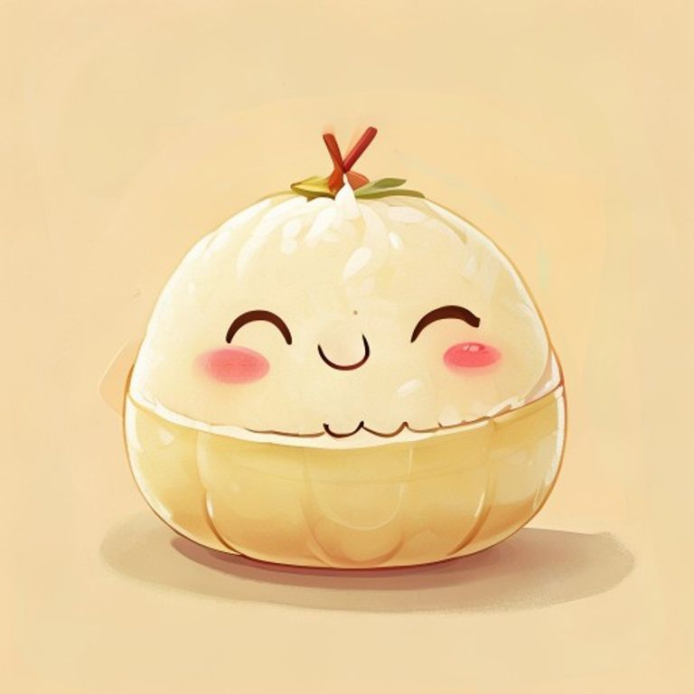

Hokkien - The Stalwart
Representing tradition and reliability, the Hokkien dumpling is known for its classic, savory flavors. It's the dependable choice, always satisfying and never disappointing.

Nonya - The Creative
A fusion of Chinese and Malay flavors, the Nonya dumpling is a testament to creativity and innovation. Its sweet and savory notes, often with a hint of pandan and a distinctive blue pea flower coloring, represent a beautiful blend of cultures.

Cantonese - The Extravagant
Packed with luxurious ingredients like salted egg yolk, chestnuts, and sometimes even abalone, the Cantonese dumpling embodies opulence and generosity. It's a celebration of abundance and a desire to share the best with loved ones.

Teochew - The Balanced
Known for its delicate balance of flavors, often with a mix of savory pork and sweet paste, the Teochew dumpling represents harmony and moderation. It's a reminder that a well-balanced life is a fulfilling one.

Kee Zhang - The Pure
This simple, elegant dumpling, made with just glutinous rice and lye water, is a symbol of purity and simplicity. Its subtle sweetness, often enjoyed with a dip of sugar or Gula Melaka, reminds us that beauty can be found in the simplest of things.